Context Graphs for Explainable, Decision-Aware AI Agents
If you only read one thing
- Context graphs extend context engineering by capturing not just knowledge but the rules and policies behind why an agent should take an action, i.e. decision awareness (c1, c2).
- The proposed decision workflow separates proposing options with pros/cons from authorizing an action, and escalates to a human or higher-privilege agent when certainty or authority is lacking (c5, c6).
- Risk analysis should include reference-class validation -- knowing whether a given case falls in the 99% common pattern or the 1% exception -- because population-level statistics can be fatal for edge cases like drug prescribing (c4).
The speakers frame context graphs as still within context engineering, but shifting from giving agents knowledge, tools, and content toward also giving them the rules and policies that explain why an agent should take a given action, making agents decision-aware rather than only knowledgeable.
“with context graphs we would really like to um provide additionally to the knowledge um the right rules and policies um to the agents to help”
▶ watch at 03:40
Decision-making is described as the point in an agent workflow where it must act without prior instructions covering the situation, illustrated with an example of an agent restocking a fridge with Red Bull without knowing rent money should be prioritized. This gap grows worse as single agents become multi-agent systems needing to coordinate.
“decision-making is basically when you run into a point in the workflow or the life of the agent where it has to do something that it doesn't have in its setup”
▶ watch at 07:19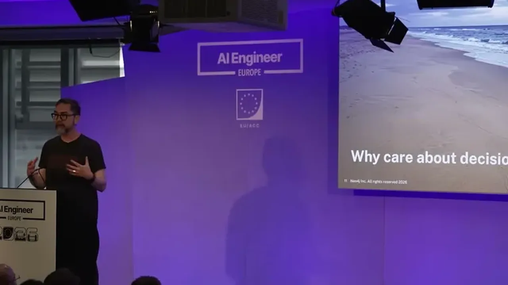
The proposed workflow starts with local context (causality of how the agent arrived at the decision point, its objective, and the operating environment), then global context (prior actions in similar situations plus hard and soft business rules), followed by risk-value analysis. Risk analysis includes reference-class validation -- identifying whether the specific case falls into a common or rare pattern -- reversibility of the decision, and cost of being wrong.
“You went through some reasoning chain, you went through some actions, and suddenly you're at a point where like you have some amount of uncertainty”
▶ watch at 09:56“if you're in the small 1% of the population, giving that same drug might be fatal”
▶ watch at 12:30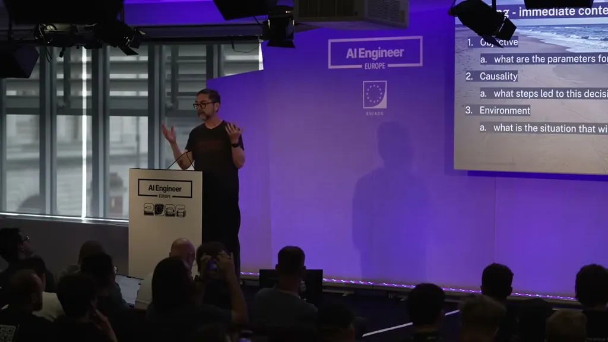
The framework's output at the analysis stage is not a decision but a set of alternatives with pros and cons, handed to a separate agent that determines whether it has the authority to act; if it lacks certainty or authority, it escalates to another agent or a human with the requisite authority.
“This agent's job, only thing would be to like actually come up with a proposal of some alternatives, and to give some pros and cons for those alternatives, not to actually make the choice”
▶ watch at 13:42After a decision is made (or deferred for lack of information), the full reasoning process -- what was considered and what wasn't -- gets saved into the graph along with the decision and any actions taken, so future agents can use it as precedent, tying back into the tracing and accountability purpose of context graphs.
“That all gets saved into the graph along with the decision itself and the actions that were taken. That lets future agents do better at their job because they have this now as precedent that they can refer to”
▶ watch at 15:05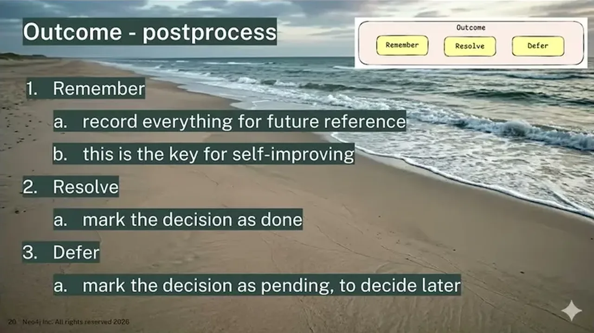
Commentary (ours)
The propose/authorize split maps closely to human org patterns (analyst recommends, manager approves) and could be a reusable pattern for any agent system operating with partial autonomy, though the talk stops short of showing a worked multi-agent implementation (ours).


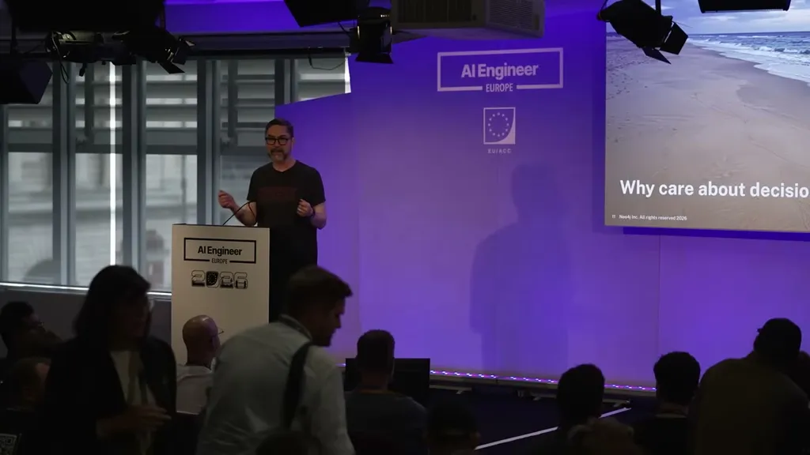
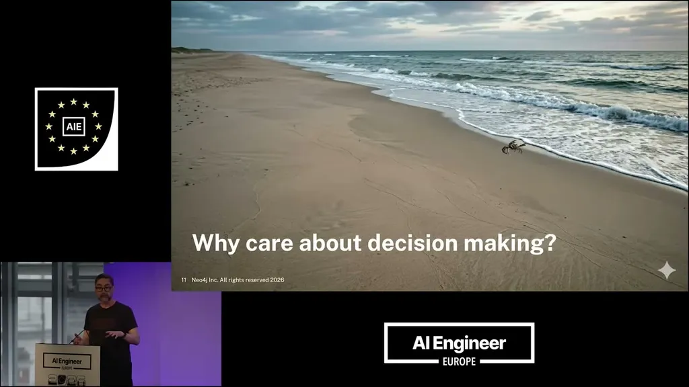
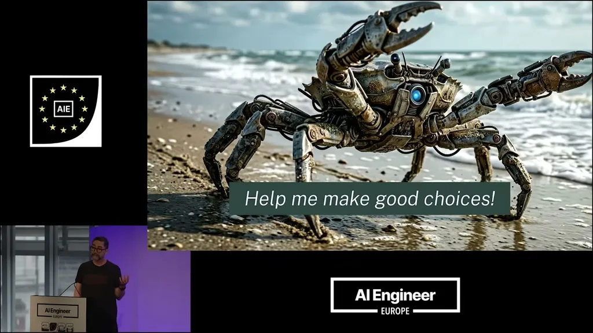
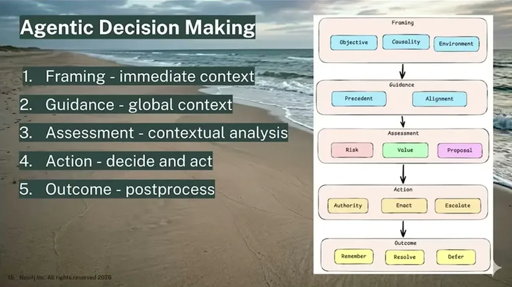
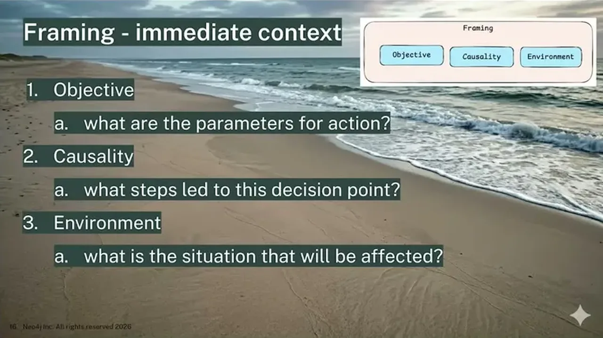
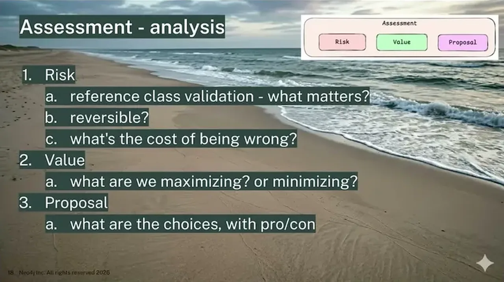
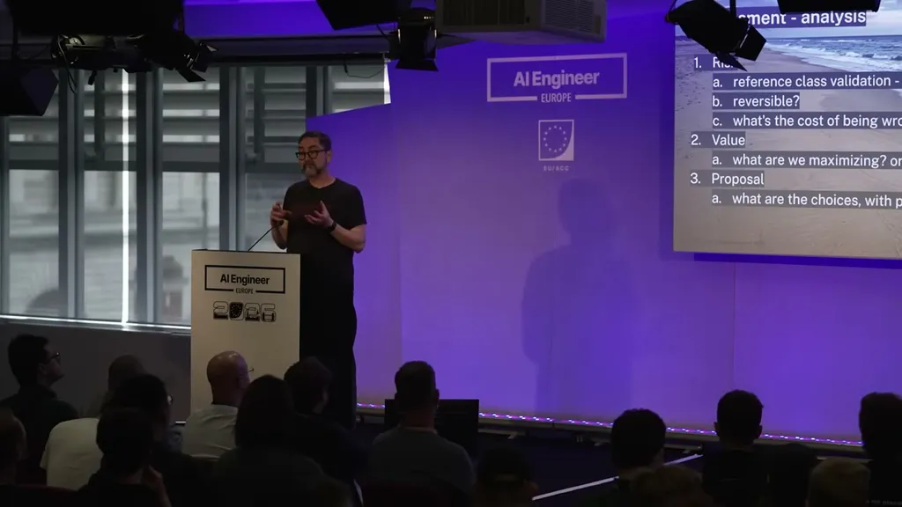
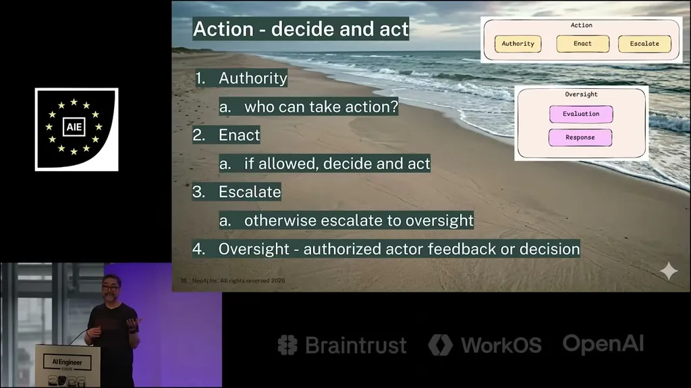
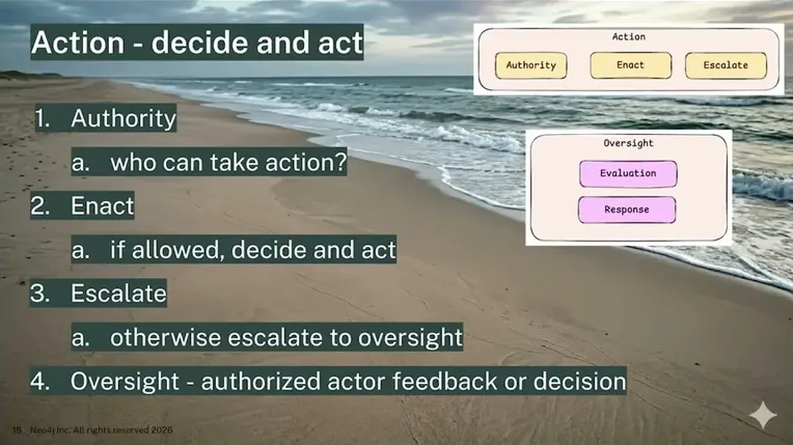
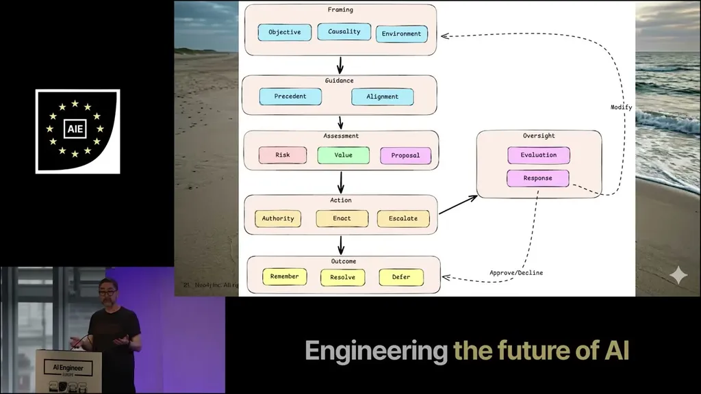
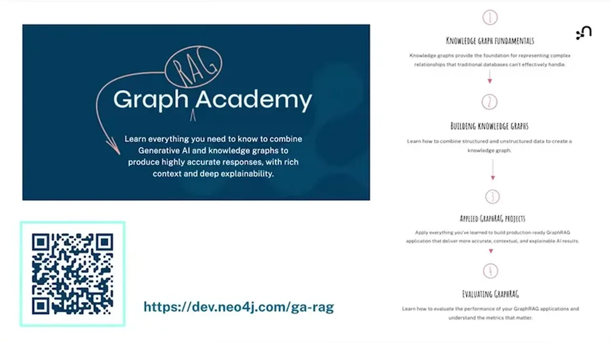
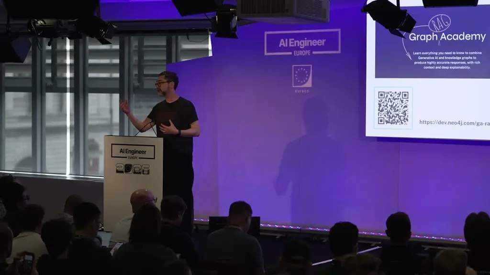
Underlying detail — every claim, typed and timestamped (6)
| Stance | Claim | t |
|---|---|---|
| asserts | Context graphs extend context engineering by adding the rules and policies behind why an agent should act, not just knowledge, tools, and content. | 03:40 |
| asserts | Decision-making is the point where an agent must act on something not covered by its given instructions, illustrated by an autonomous fridge-restocking agent not knowing to prioritize rent money. | 07:19 |
| recommends | Decisions should be framed first with local context (causality, objective, environment) and then global context (prior actions and hard/soft business rules) before analysis. | 09:56 |
| warns | Population-level statistical behavior can mislead risk analysis for the minority case, illustrated by a drug that is correct for 99% of patients but fatal for the other 1%. | 12:30 |
| recommends | One agent should propose alternatives with pros and cons without deciding, while a separate agent determines authority to act and escalates to a human or higher-privilege agent when uncertain. | 13:42 |
| recommends | The full reasoning process behind a decision, including what was and wasn't considered, should be saved into the graph so future agents can use it as precedent. | 15:05 |
Machine-readable copy embedded in this page (script#ontology) and in the corpus ontology.